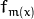

A common machine learning task is supervised learning. In supervised learning, the goal is to learn the functional relationship
between the input
 and the output
. Predicting the qualitative output is called classification, while predicting the quantitative output is called regression.
and the output
. Predicting the qualitative output is called classification, while predicting the quantitative output is called regression.
Boosting is a powerful learning concept that provides a solution to the supervised classification learning task. It combines the performance of many “weak” classifiers to produce a powerful committee [HTF01]. A weak classifier is only required to be better than chance, and thus can be very simple and computationally inexpensive. However, many of them smartly combine results to a strong classifier that often outperforms most “monolithic” strong classifiers such as SVMs and Neural Networks.
Decision trees are the most popular weak classifiers used in boosting schemes. Often the simplest decision trees with only a single split node per tree (called stumps ) are sufficient.
The boosted model is based on
 training examples
with
and
.
is a
-component vector. Each component encodes a feature relevant to the learning task at hand. The desired two-class output is encoded as -1 and +1.
training examples
with
and
.
is a
-component vector. Each component encodes a feature relevant to the learning task at hand. The desired two-class output is encoded as -1 and +1.
Different variants of boosting are known as Discrete Adaboost, Real AdaBoost, LogitBoost, and Gentle AdaBoost [FHT98]. All of them are very similar in their overall structure. Therefore, this chapter focuses only on the standard two-class Discrete AdaBoost algorithm, outlined below. Initially the same weight is assigned to each sample (step 2). Then, a weak classifier
 is trained on the weighted training data (step 3a). Its weighted training error and scaling factor
is computed (step 3b). The weights are increased for training samples that have been misclassified (step 3c). All weights are then normalized, and the process of finding the next weak classifier continues for another
 -1 times. The final classifier
is the sign of the weighted sum over the individual weak classifiers (step 4).
-1 times. The final classifier
is the sign of the weighted sum over the individual weak classifiers (step 4).
Two-class Discrete AdaBoost Algorithm
Set
examples
with
.
Assign weights as
 .
.
Repeat for :
3.1. Fit the classifier , using weights on the training data.
3.2. Compute .
3.3. Set and renormalize so that .
Classify new samples x using the formula: .
Note
Similar to the classical boosting methods, the current implementation supports two-class classifiers only. For M > 2 classes, there is the AdaBoost.MH algorithm (described in [FHT98]) that reduces the problem to the two-class problem, yet with a much larger training set.
To reduce computation time for boosted models without substantially losing accuracy, the influence trimming technique can be employed. As the training algorithm proceeds and the number of trees in the ensemble is increased, a larger number of the training samples are classified correctly and with increasing confidence, thereby those samples receive smaller weights on the subsequent iterations. Examples with a very low relative weight have a small impact on the weak classifier training. Thus, such examples may be excluded during the weak classifier training without having much effect on the induced classifier. This process is controlled with the weight_trim_rate parameter. Only examples with the summary fraction weight_trim_rate of the total weight mass are used in the weak classifier training. Note that the weights for all training examples are recomputed at each training iteration. Examples deleted at a particular iteration may be used again for learning some of the weak classifiers further [FHT98].
| [HTF01] | Hastie, T., Tibshirani, R., Friedman, J. H. The Elements of Statistical Learning: Data Mining, Inference, and Prediction. Springer Series in Statistics. 2001. |
| [FHT98] | (1, 2, 3) Friedman, J. H., Hastie, T. and Tibshirani, R. Additive Logistic Regression: a Statistical View of Boosting. Technical Report, Dept. of Statistics*, Stanford University, 1998. |
Boosting training parameters.
The structure is derived from DTrees::Params but not all of the decision tree parameters are supported. In particular, cross-validation is not supported.
All parameters are public. You can initialize them by a constructor and then override some of them directly if you want.
The constructors.
| Parameters: |
|
|---|
See DTrees::Params for description of other parameters.
Default parameters are:
Boost::Params::Params()
{
boostType = Boost::REAL;
weakCount = 100;
weightTrimRate = 0.95;
CVFolds = 0;
maxDepth = 1;
}
Creates the empty model
Use StatModel::train to train the model, StatModel::train<Boost>(traindata, params) to create and train the model, StatModel::load<Boost>(filename) to load the pre-trained model.
Returns the boosting parameters
The method returns the training parameters.
Sets the boosting parameters
| Parameters: |
|
|---|
The method sets the training parameters.
StatModel::predict(samples, results, flags) should be used. Pass flags=StatModel::RAW_OUTPUT to get the raw sum from Boost classifier.